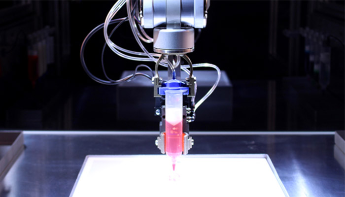
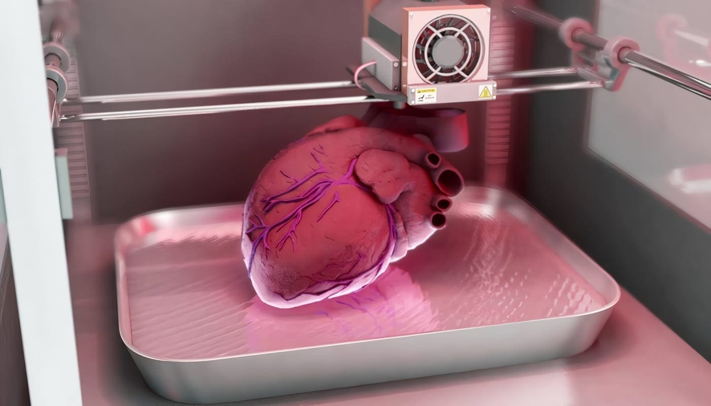

Bioimpresión 3D avanzada
Plataforma de Bioimpresión Tridimensional Avanzada
Construimos tejido, capa por capa, con precisión de máquina y lógica de vida.
Solicitar informaciónQué es
PBTA fabrica estructuras biológicas con precisión celular, capa por capa.
Conoce nuestra misión →Nosotros
Democratizar el acceso a tejido bioimpreso funcional, acelerando la investigación médica y las terapias regenerativas.
Ser la plataforma de referencia en bioimpresión 3D avanzada, liderando la transición hacia la medicina regenerativa personalizada.

Contacto
¿Quieres saber más sobre PBTA? Escríbenos.